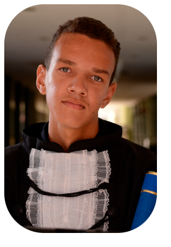

Sobre
Quem sou
Me chamo Rafael, morador de 3 Fronteiras, filho da Eliana e do Ronaldo. Tenho um irmão que também se chama Ronaldo, tive algumas experiências na minha vida em relação a trabalho, quando pequeno vendia caldo de caldo de cana e rapadura junto com meu vô; trabalhei em um ponto de vendas de iscas, que também era um negócio familiar, tive algumas outras curtas experiências e atualmente trabalho como servente de pedreiro. Hoje busco uma oportunidade para trabalhar como programador e sei que tenho muito ainda o que aprender.
De onde eu vim
Apesar de ter nascido em Santa Fé do Sul, fui criado e cresci em Três Fronteiras, cidade vizinha de Santa Fé, cidade em que até o momento da escrita desse texto. A razão para eu ter nascido lá é por ser uma cidade muita pequena e dependente de Santa Fé. Três Fronteiras é uma cidade com pouco mais de 6 mil habitantes que fica no interior de são Paulo, próximo a divisa com mato-grosso do sul e minas gerais. Apesar dessa cidade ser presente durante todo meu período de vida, sonho em mudar e conhecer algo novo.
Formação
Fiz alguns cursos, como: Inglês e espanhol no Centro de estudo de línguas (CEL); informática básica na sit escola de profissões; informática para internet na Etec de Santa Fé sul e atualmente faço sistemas pra internet na Fatec Jales.
Hobbies
Meus hobbies são: esportes, como tênis de mesa, futebol, vôlei; assistir stand up; jogar com amigos e assistir algumas séries e filmes, mas sendo eles bem específicos.